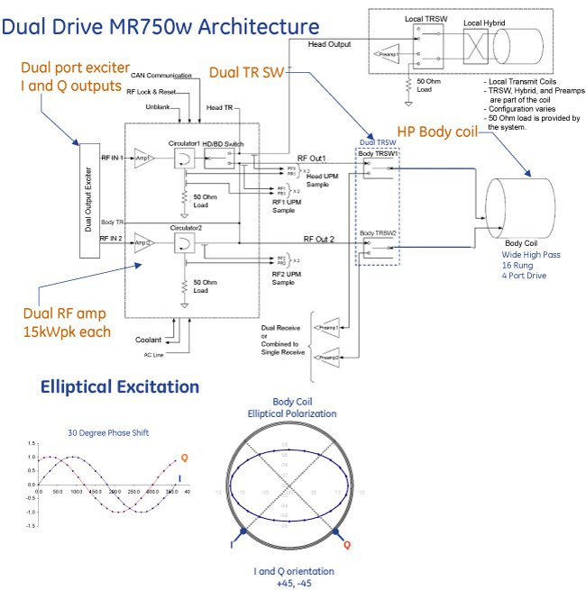
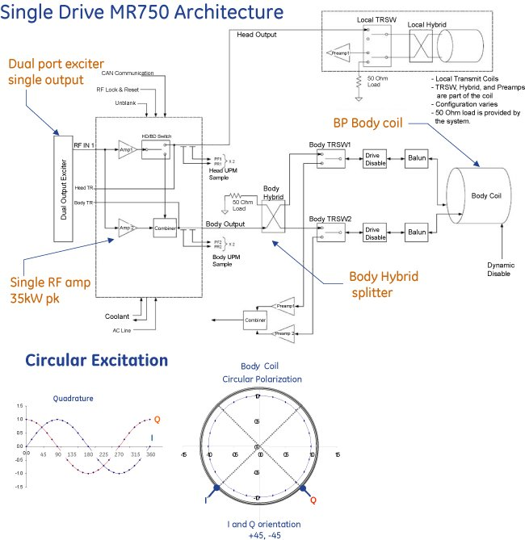
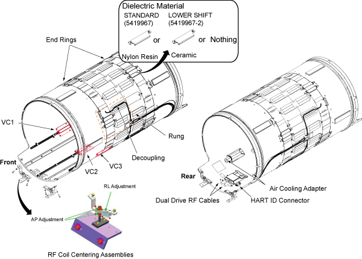

GE Exclusive Use Only
Direction 5670006, Rev# 1
Discovery MR750w GEM Service Methods
Module Version 1.0, Version Date 8/4/11
GE Exclusive Use Only |
The RF body coil is a resonant antenna, built on a cylindrical form. This antenna serves as both a transmit antenna and a receive antenna.
As a transmit antenna, the RF coil converts the RF amplifier's output power into a homogeneous, circularly polarized magnetic field.
As a receive antenna, the RF coil detects the magnetic resonance signal and delivers it to the receive system's preamplifiers.
The body coil includes electronically controllable disabling circuitry, which switches the coil between a resonant state and a disabled state.
In the resonant state, the coil operates as described above.
In the disabled state, the body coil is made nonresonant so that it does not affect other coils, such as the head coil or surface coils.
The disabling circuits are based on PIN diodes, which are controlled by biasing currents (resonant state) and reverse biasing voltages (disabled state) from a remote PIN diode driver module. Since the body coil is a resonant antenna, it must be tuned to account for the presence of the gradient coil RF shield. Capacitors on the coil control the resonant frequency, and the frequency is adjusted by manually changing these capacitors.
The MR750w RF Body Coil is a High Pass coil designed for the 70cm diameter wide patient bore. The MR750w body coil is part of the Dual Drive Transmit Chain designed to establish elliptical polarized RF fields which is more robust to in-homogeneities produced by dielectric effect. Illustration 1shows MR750w Dual Drive Architecture whereas Illustration 2 shows MR750 Single Drive Architecture as comparison.
Illustration 1: MR750w Dual Drive Architecture

Illustration 2: MR750 Single Drive Architecture

MR 750w RF Body Coil Features
Patient Bore size is 70cm in Diameter.
There is a mechanism to center the coil left-right and up-down by adjusting RF Body Coil supports.
Coil tuning in the field can be done using the variable capacitors by FE personnel without replacing capacitors.
Dielectric material tuning methods is prepared in case coil frequency cannot be adjusted by variable capacitors. This adjustment is done at manufacturing and done for troubleshooting at site.
Weight is approximately 95lbs (43kg).
End Ring: Distributed Cap (RT5880, 12mil, solder mask)
Rung: Acoustic Reduction Design by the shape and slits
Four Ports Drive: 4 Ports Drive
Decoupling: Decoupling SW on the drive cable (Drive Disable)
Site Tuning: Variable Capacitors (VC1, VC2, VC3). Adjustable range of VC is +/-250khz
Dielectric Material: Extended Tuning Range with Dielectric Material in case coil tuning cannot be adjusted by variable capacitors.
Approximately 250KHz frequency shift from Nothing using STANDARD dielectric material.
Approximately 500KHz frequency shift from Nothing using LOWER SHIFT dielectric material.
Mount/Centering: Mount on the magnet to adjust the Body Coil to the Center of the Magnet bore.
MNS Decoupling: Add support circuits for He (97MHz).
Illustration 3: MR 750w RF Body Coil Overview
